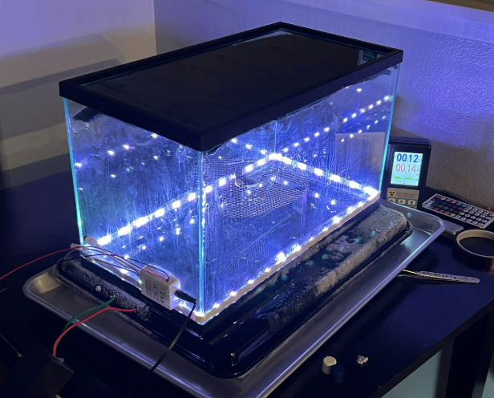
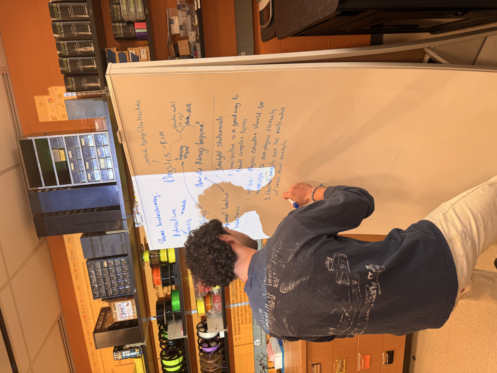

Design Project: Peltier-Cooled Diffusion Cloud Chamber
Stage 1: Problem Definition and Brainstorming
Project Overview
This project focuses on a Peltier-cooled diffusion cloud chamber intended to function as an educational teaching tool. Rather than serving only as a device demonstration, the chamber is meant to create a classroom experience in which students can directly observe evidence of ionizing radiation and connect that observation to a physical reality.
My team and I chose this direction because particle physics can feel unintuitive, uninteresting, and difficult to access when students are asked to imagine a phenomenon they cannot normally sense. Making radiation tracks visible to the human eye offers a more concrete way to introduce the topic and gives students a reason to observe, question, and discuss what they are seeing. The overall hope is that it inspires students to explore the fascinating world of particle physics further.

Example cloud chamber in action.
Problem Statement
This project addresses a common issue regarding certain academia, being the lack of a compact, consistent, and educationally valuable way to help students visualize non-intuitive topics. This can range from a topic within anthropology to that of our focus, physics. Our project will visualize the passage of ionizing radiation in the atmosphere, here, on Brandeis's campus. The goal is to develop a device, an electron cloud chamber, that makes an invisible phenomenon visible. We hope to make this topic more accessible by presenting it in a form that supports classroom teaching, discussion, and conceptual understanding.
Background Framing
Our approach for the project is framed around the diffusion cloud chamber, rather than around detection alone. The chamber works by creating a supersaturated alcohol vapor to flood the enclosed atmosphere. Within the chamber will be a great temperature differential between the top and surface of the base. That temperature gradient creates the sensitive region where particle tracks become visible. In general, the idea is about visualization, but for those interested in the physical phenomena, the trails are visible because a charged particle passes through a supersaturated alcohol vapor in the cloud chamber and ionizes the gas along its path. The vapor then condenses onto those ions, forming tiny droplets. Those droplets line up where the particle traveled, so you can see a visible trail of exactly that particle's path. For the basic educational demonstration, natural background radiation should be enough to create visible trails, meaning nothing special needs to be placed inside the chamber for the core effect to appear. However, I have included an image below, which is a representation of what happens when something of greater emission is placed inside the chamber.
The emphasis is on the chamber as an educational system rather than as an isolated piece of hardware. The value of the demonstration comes from allowing students to see direct visual proof that atmospheric radiation exists, notice that different particle tracks may appear different, and begin asking what is visible, what can be inferred, and what still cannot be directly seen. This can give rise to questions regarding how we can alter these paths, how to induce a longer path, as well as the limitations of the device. That is how we plan to balance educational value with consistency, accessibility, and usability.
User Profile
The primary users are a physics instructor or professor who is struggling to introduce students to ionizing radiation in a way that feels concrete rather than purely abstract. As well as the students themselves, the idea is that they can come to conclusions and form hypotheses about this abstract concept independently using the device.
The secondary users are physics majors. Although they could benefit from the demonstration, this is mainly a focus on helping those who cannot visualize the invisible; therefore, a physics major studying these concepts might already have a good idea of the abstract in a concrete form. However, as mentioned, the device can still benefit these individuals as they, too, cannot often see these phenomena with the human eye.
The educational goal is to help students see, ask questions, build interest, and connect what they observe to physical reality.
The chamber will teach students to make observations of the now visible particles and convert those observations into understanding, rather than overwhelm users with engineering details and the complex underlying quantum mechanics.
Problem Definition and Brainstorming
One major challenge is creating interest in something that students cannot normally sense and connecting this topic to the idea of accessibility for all users.
The project has to balance functionality, portability, consistency, aesthetics, and educational value.
Another hurdle is the balance between system autonomy and the amount of interaction users should have. Ideally, we want the users' focus to be on the chamber, not the controls. Our plan is to build the device with a simple plug-and-play interface.
The chamber also raises the question of showing versus explaining. Although we want to show the user this phenomenon, they will not always understand what the importance is. As the builders, we will add an interface that briefly introduces the user to the concepts we hope to convey.
Mathematics and physical law both need to be incorporated in a way that feels meaningful rather than forced. In general, we can approach this from a fabrication standpoint alone with zero quantitative analysis. On the flip side, we can also calculate the amount of voltage necessary, coupled with the efficiency of the heat sink, without forgetting the impact of density of saturation...and very quickly we lose sight of our original intent. This fine line between over-explaining and educational substance will have to be addressed carefully and presented with the user in mind as someone not currently familiar with the concepts.

Group member brainstorming our problem definition, insight statements, and focus questions.
Design Theme Summary
Broader themes I mentioned that will be present in the project include accessibility to the invisible, educational value, portability, consistency within the device, autonomy balanced with user interaction, and deeper scientific explanation beyond spectacle without over-explaining to an uninformed audience.
Insight Statements
Students struggle to engage with ionizing radiation because it is normally invisible and difficult to connect to everyday experience.
A successful classroom cloud chamber must do more than function physically; it must also balance cooling performance with portability, consistency, and educational clarity.
Too much automation may reduce learning, while too much user control may reduce reliability.
The educational power of the chamber comes not only from showing tracks, but from helping students ask better questions about what those tracks mean.
The chamber is strong as a teaching tool as it connects direct visual experience to broader academic clarity.
Focus Questions
How can we make ionizing radiation visible in a way that feels concrete and captivating to students?
How might we design a cloud chamber that is compact and portable without sacrificing track visibility and consistency? How does design effect who can use it? Why?
How might we balance automation with user interaction so the system is reliable but still educational?
How might we use the chamber not just to show tracks but to prompt deeper discussion of physics concepts and limitations? How do we move students past the "Whoa! Cool" stage into forming hypotheses?
Selected Design Directions
The selected direction is a Peltier-cooled diffusion cloud chamber designed as an educational teaching tool. I chose this approach because it supports the core goal of making invisible radiation visible while also allowing the project to be built around usability, safety explanation, and conceptual accessibility rather than engineering spectacle alone. At this stage, this should be read as the current direction rather than as a fully finalized design.
Storyboard
Closing Reflection
The larger goal of this project is to make an abstract concept feel more concrete. Particle physics can be difficult to understand when students are asked to imagine a phenomenon they cannot normally see, so the cloud chamber gives them a more direct way to connect observation to the underlying physics. By making ionizing radiation visible in a classroom setting, the project can help turn a difficult topic into something more accessible, discussable, and real.